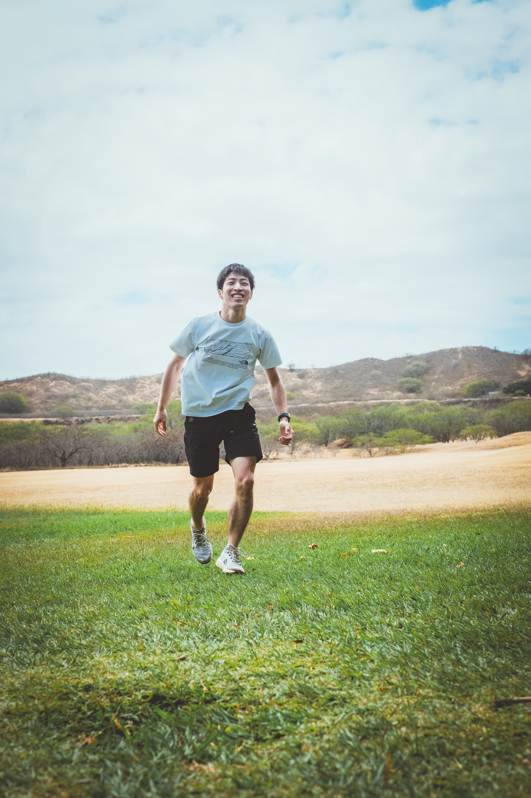

ねごってどんな人？
医師として働き始めた日々
2019年、僕は医師になりました。2年間の初期研修を経て、消化器内科医として内視鏡（胃カメラ・大腸カメラなど）・救急診療に従事していました。朝から夜までの過酷な労働で、ある時期「感情がなくなった」という状態になってしまいました。
「こんな生き方で本当にいいのか？」と自問した時、ひょんなことからトライアスロンに挑戦することを決心し、人生で初めて持久系スポーツに挑戦しました。そこからというもの、ランニングにどっぷりハマってしまいました。
「ねご2.0」誕生の瞬間
1年間の練習を経て、初めてのトライアスロン大会で水泳中に溺れそうになりました。それでも諦めずにゴールした時、心の底から「パラダイムシフト」が起きました。
その瞬間、私は気づいたのです。「子ども心を忘れた時、人は死ぬ」と。大人は日常のルーティンや恐れ、社会のプレッシャーによって、本当の自分を失ってしまうのです。
僕はひたすら走るようになりました。
マラソンは僕にとって、「過去の自分への挑戦に夢中になること、そして苦痛を伴う身体的な経験を仲間と共有することで強い絆を形成する活動」になったのです。

NEGORO RUNNING CLUBの誕生
「この体験を、もっと多くの人と分かち合いたい」——そんな想いから、このコミュニティが生まれました。
NEGORO RUNNING CLUBは、ただ速く走ることや勝つことが目的ではありません。「子ども心」を取り戻し、コミュニティと一緒に成長できる特別な場所です。
「run for myself, run for everyone!!」 —— 自分のために流す汗が、いつしか仲間の背中を押す力になる。そんな体験を一緒にしませんか？

「その一つの気持ち」だけで十分
走力や経験は一切問いません。大切なのは「挑戦してみたい」という、その一つの気持ちだけです。
私も最初は初心者でした。でも、今ではフルマラソンを2時50分で走ることを目標にし、アイアンマンレースや100マイルレースにも挑戦しようとしています。
大切なのは、あなたの心の中にある「何かを変えたい」という小さな、でも確かな光です。
あなたも「自分2.0」を体験しませんか？
あなたの心が「無理だ」とささやく道こそ、あなたの魂が本当に進みたい道なのかもしれません。岡本太郎の言葉通り、「危険だ、という道は必ず、自分の行きたい道」なのです。
私と一緒に、その扉を開けてみませんか？一番連絡しやすいのはInstagramのメッセージです。「奈良マラソン興味あります！」でも「初心者ですが大丈夫ですか？」でも、どんなメッセージでも大歓迎です。
きっと、今のあなたとは違う「自分2.0」に出会えるはずです。